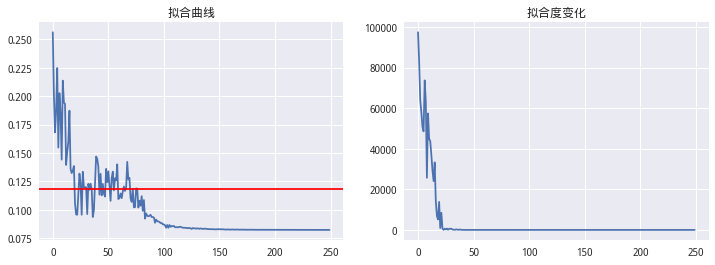
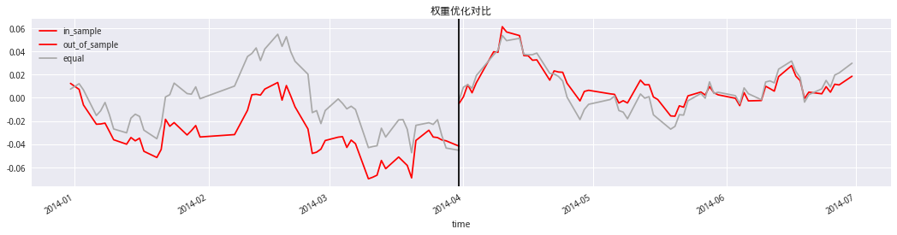
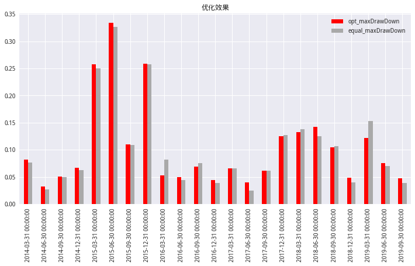
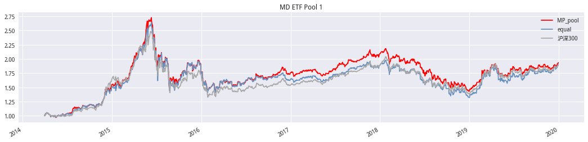
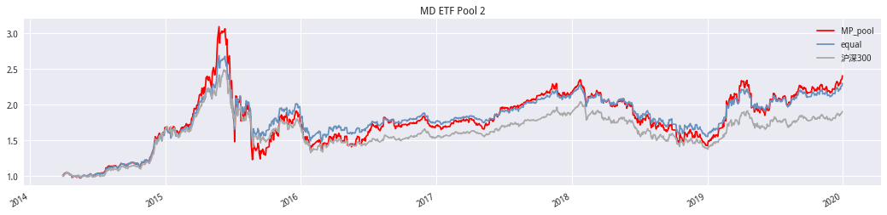
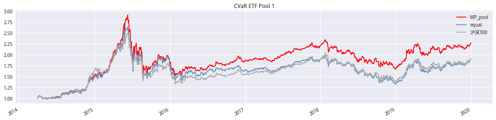
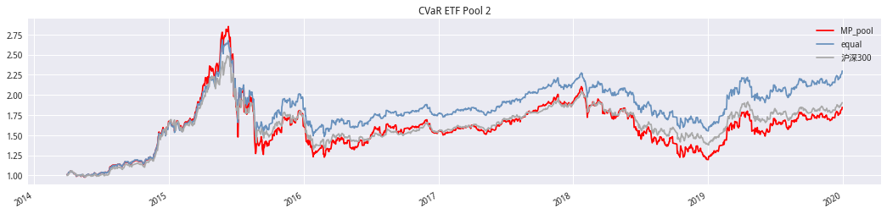
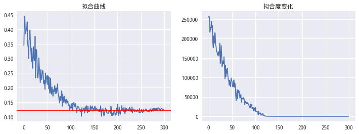

前言#
优化问题是金融中基础、不可避免的问题，从均值方差的二次规划开始， 优化问题已经深入到金融领域的方方面面，从大类资产配置到组合优化、从理论模型下的效用最大化再到实战模型的参数优化，都用到优化技术。而很多优化问题较为复杂，非凸、不连续、不可导、高维、随机、约束过多等问题给数 值计算带来困扰，本文提出次优理论并且介绍差分进化算法，通过展示差分进 化算法的良好效果，希望给广大投资者的量化建模带来一丝启示。本文方法对组合优化、大类配置、FOF组合构建、智能投顾等领域都会有所帮助。
当期优化的最优解不一定是下一期的最优，而样本内的次优在样本外可能战胜样本内的最优。所以，从金融投资角度看，优化问题下的最优解不一定是我们想要的，因为我们的目标是获得较好的样本外收益表现。
# 初始库
import sys
sys.path.append('..')
from DE_algorithm import *
import numpy as np
import pandas as pd
import empyrical as ep
import scipy.stats as st
from tqdm import tqdm_notebook
from typing import (Tuple,List)
from dateutil.parser import parse
import matplotlib as mpl
import matplotlib.pyplot as plt
plt.style.use('ggplot')
from jqdata import *
# 设置字体 用来正常显示中文标签
#plt.rcParams['font.sans-serif'] = ['SimHei']
plt.rcParams['font.family']='serif'
# 用来正常显示负号
plt.rcParams['axes.unicode_minus'] = False
# 图表主题
plt.style.use('seaborn')
# 构造时间区间
def build_periods(start:str, end:str, freq:str,offsetN:int=None) -> Tuple[list, list]:
'''构造区间'''
# 半年度要特殊一点
if freq == 'half':
periods = [i.strftime(
'%Y-%m-%d') for i in pd.date_range(start, end, freq='Q') if i.month in [6, 12]]
end_range = periods[1:] + [end]
start_range = periods
else:
periods = [i.strftime('%Y-%m-%d')
for i in pd.date_range(start, end, freq=freq)]
start_range = periods[:-1]
end_range = periods[1:]
if offsetN:
start_range = [tdaysoffset(i, offsetN) for i in start_range]
end_range = [tdaysoffset(i, offsetN) for i in end_range]
return (start_range, end_range)
else:
return (start_range, end_range)
# offset day
def tdaysoffset(end_date: str, count: int) -> datetime.date:
'''
end_date:为基准日期
count:为正则后推，负为前推
-----------
return datetime.date
'''
trade_date = get_trade_days(end_date=end_date, count=1)[0]
if count > 0:
# 将end_date转为交易日
trade_cal = get_all_trade_days().tolist()
trade_idx = trade_cal.index(trade_date)
return trade_cal[trade_idx + count]
elif count < 0:
return get_trade_days(end_date=trade_date, count=abs(count))[0]
else:
raise ValueError('别闹！')
# 风险指标
def Strategy_performance(return_df: pd.DataFrame, periods='monthly') -> pd.DataFrame:
'''计算风险指标 默认为月度:月度调仓'''
ser: pd.DataFrame = pd.DataFrame()
ser['年化收益率'] = ep.annual_return(return_df, period=periods)
ser['波动率'] = return_df.apply(lambda x: ep.annual_volatility(x,period=periods))
ser['夏普'] = return_df.apply(ep.sharpe_ratio, period=periods)
ser['最大回撤'] = return_df.apply(lambda x: ep.max_drawdown(x))
if 'benchmark' in return_df.columns:
select_col = [col for col in return_df.columns if col != 'benchmark']
ser['IR'] = return_df[select_col].apply(
lambda x: information_ratio(x, return_df['benchmark']))
ser['Alpha'] = return_df[select_col].apply(
lambda x: ep.alpha(x, return_df['benchmark'], period=periods))
return ser.T
def information_ratio(returns, factor_returns):
"""
Determines the Information ratio of a strategy.
Parameters
----------
returns : :py:class:`pandas.Series` or pd.DataFrame
Daily returns of the strategy, noncumulative.
See full explanation in :func:`~empyrical.stats.cum_returns`.
factor_returns: :class:`float` / :py:class:`pandas.Series`
Benchmark return to compare returns against.
Returns
-------
:class:`float`
The information ratio.
Note
-----
See https://en.wikipedia.org/wiki/information_ratio for more details.
"""
if len(returns) < 2:
return np.nan
active_return = _adjust_returns(returns, factor_returns)
tracking_error = np.std(active_return, ddof=1)
if np.isnan(tracking_error):
return 0.0
if tracking_error == 0:
return np.nan
return np.mean(active_return) / tracking_error
def _adjust_returns(returns, adjustment_factor):
"""
Returns a new :py:class:`pandas.Series` adjusted by adjustment_factor.
Optimizes for the case of adjustment_factor being 0.
Parameters
----------
returns : :py:class:`pandas.Series`
adjustment_factor : :py:class:`pandas.Series` / :class:`float`
Returns
-------
:py:class:`pandas.Series`
"""
if isinstance(adjustment_factor, (float, int)) and adjustment_factor == 0:
return returns.copy()
return returns - adjustment_factor
# 用于回测
def BackTesting(timeRange:List,weight:dict)->pd.DataFrame:
'''
timeRange:时间区间
wieght:权重key-trade,values:pd.Series
----------------
return 等权、优化权重、基准的收益率序列
'''
begin = min(timeRange[0])
end = max(timeRange[1])
idx = pd.to_datetime(get_trade_days(begin,end))
# 缓存容器
ret_df = pd.DataFrame(data=np.zeros((len(idx),2)),
index=idx,
columns=['opt_ret','equal_ret'])
# 模拟回测
## 季度:beginDt日买入,至nextDt轮动
for beginDt,nextDt in tqdm_notebook(zip(*timeRange),total=len(timeRange[0])):
# 权重优化基于beginDt
weight_ser = weight[beginDt] # 读取权重
code = weight_ser.index.tolist()
# 持仓从beginDt日至nextDt日
price = get_price(code,beginDt,tdaysoffset(nextDt,1),fields='close',panel=False)
close = pd.pivot_table(price,index='time',columns='code',values='close')
pct_df = close.pct_change().shift(-1).iloc[:-1] # 收益滞后一期 防止未来数据
ret_df.loc[pct_df.index,'opt_ret'] = pct_df @ weight_ser # 计算组合权重
ret_df.loc[pct_df.index,'equal_ret'] = pct_df.mean(axis=1) # 等权
benchmark = get_price('000300.XSHG',startDt,endDt,fields='close')
benchmark = benchmark.pct_change().reindex(ret_df.index)
ret_df['benchmark'] = benchmark
return ret_df
DE算法权重优化#
差分进化算法参数是个技术活….
## 设置标的及时间范围
# 设置时间范围
startDt = '2014-01-01'
endDt = '2019-12-31'
# 设置调仓频率为季度
timeRange = build_periods(startDt,endDt,'Q')
# 设置标的
etfList = '510050.XSHG,510500.XSHG,510300.XSHG,159915.XSHE,510180.XSHG,159901.XSHE,159902.XSHE'.split(',')
# 测试数据获取
price = get_price(etfList,end_date = timeRange[0][0],count=126,fields='close',panel=False)
price = pd.pivot_table(price,index='time',columns='code',values='close')
pct_chg = price.pct_change().iloc[1:]
超参数#
寻找在de进化算法下的最优初始参数
from sklearn.base import TransformerMixin, BaseEstimator
from sklearn.pipeline import Pipeline
from sklearn.model_selection import GridSearchCV
from typing import (Callable)
'''使用sklearn接口用于超参'''
class DEPortfolioOpt(BaseEstimator):
def __init__(self,func:Callable,size_pop:int,max_iter:int,F:float,proub_mut:float)->None:
self.func = func # 目标函数
self.size_pop = size_pop # 种群大小
self.max_iter = max_iter # 迭代次数
self.F = F # 变异系数
self.proub_mut = proub_mut # 变异概率
def fit(self,returns:pd.DataFrame)->np.array:
'''获取优化后的权重'''
self.de = DE(func= lambda w:self.func(returns,w),
n_dim = returns.shape[1],
size_pop = self.size_pop,
max_iter = self.max_iter,
F=self.F,
prob_mut = self.proub_mut,
lb=[0],
ub=[1],
constraint_eq=[lambda x:1 - np.sum(x)])
w,self.maxDrawdown = self.de.run()
return pd.Series(w,index=returns.columns)
def predict(self,returns)->float:
'''获取权重后的收益率'''
w = self.fit(returns)
return returns @ w
def score(self,returns)->float:
'''评分根据优化后的回撤决定'''
return -self.maxDrawdown
def maxDrawdown(pct_chg:pd.DataFrame,w:np.array)->float:
'''目标函数'''
return - ep.max_drawdown(pct_chg @ w)
# 网格超参
## 等待时间有点漫长大概1h+
param_grid = [{'F':np.arange(0.2,1.1,0.1),
'proub_mut':np.arange(0.1,1.1,0.1)}]
de_portfolio = DEPortfolioOpt(maxDrawdown,150,250,0.5,1)
# cv默认为3flod
grid_search = GridSearchCV(de_portfolio,param_grid)
grid_search.fit(pct_chg)
GridSearchCV(cv=None, error_score='raise',
estimator=DEPortfolioOpt(F=0.5, func=<function target_func at 0x7fea66a98e18>,
max_iter=250, proub_mut=1, size_pop=150),
fit_params=None, iid=True, n_jobs=1,
param_grid=[{'F': array([0.2, 0.3, 0.4, 0.5, 0.6, 0.7, 0.8, 0.9, 1. ]), 'proub_mut': array([0.1, 0.2, 0.3, 0.4, 0.5, 0.6, 0.7, 0.8, 0.9, 1. ])}],
pre_dispatch='2*n_jobs', refit=True, return_train_score='warn',
scoring=None, verbose=0)
最优参数为F:0.5,proub_mut:1
# 最优参数
grid_search.best_params_
{'F': 0.5000000000000001, 'proub_mut': 1.0}
equal = -ep.max_drawdown(pct_chg.mean(axis=1))
print('等权回撤:%.4f,优化回撤:%.4f'%(equal,- grid_search.best_estimator_.score(pct_chg)))
等权回撤:0.1179,优化回撤:0.0822
可以看到在迭代到200次时，曲线基本上没有什么变化了,所有将max_iter设置在200就差不多了
# 回撤情况
maxdrawdownList = [-ep.max_drawdown(pct_chg @ w) for w in grid_search.best_estimator_.de.generation_best_X]
plt.rcParams['font.family']='serif'
fig,axes = plt.subplots(1,2,figsize=(6 * 2,4))
axes[0].set_title('拟合曲线')
axes[0].plot(maxdrawdownList,label='拟合的回撤')
axes[0].axhline(equal,color='r',label='等权回撤')
axes[1].set_title('拟合度变化')
axes[1].plot(grid_search.best_estimator_.de.generation_best_Y)
[<matplotlib.lines.Line2D at 0x7fea66959278>]

best_x = grid_search.best_estimator_.de.best_x # 最优组合
price = get_price(etfList,start_date=timeRange[0][0],end_date = timeRange[0][1],fields='close',panel=False)
price = pd.pivot_table(price,index='time',columns='code',values='close')
pct_chg = price.pct_change().iloc[1:]
print('样本外回撤情况%.4f(等权:%.4f)'%(ep.max_drawdown(pct_chg @ best_x),ep.max_drawdown(pct_chg.mean(axis=1))))
样本外回撤情况-0.0729(等权:-0.0769)
红线左侧为样本内优化情况,右侧为样本外情况，可以看到样本外并不好
price = get_price(etfList,
start_date=tdaysoffset(timeRange[0][0],-60),
end_date=timeRange[0][1],
fields='close',
panel=False)
price = pd.pivot_table(price,index='time',columns='code',values='close')
pct_chg = price.pct_change().iloc[1:]
# 样本内
in_sample = pct_chg.loc[:timeRange[0][0]]
# 样本外
out_of_sample = pct_chg.loc[timeRange[0][0]:]
fig,ax = plt.subplots(figsize=(18,4))
ax.set_title('权重优化对比')
ep.cum_returns(in_sample @ best_x).plot(ax=ax,label='in_sample',color='r')
ep.cum_returns(out_of_sample @ best_x).plot(ax=ax,label='out_of_sample',color='r')
ep.cum_returns(out_of_sample.mean(axis=1)).plot(ax=ax,label='equal',color='darkgray')
ep.cum_returns(in_sample.mean(axis=1)).plot(ax=ax,label='equal',color='darkgray')
plt.axvline(timeRange[0][0],color='black')
h1,l1 = ax.get_legend_handles_labels()
h1 = h1[:-1]
l1 = l1[:-1]
plt.legend(h1,l1)
<matplotlib.legend.Legend at 0x7fea662497f0>

回测逻辑:
在每季度计算标的的最优权重(使用前125日的数据),持有至下一个季度换仓。
即在T-1日收盘后，使用T-1至T-(1-N)日收益率序列进行组合优化，在T日按照T-1日的优化结果持有对应的标的,直至下一个换仓日。
# 计算权重
def get_weight(opt:DEPortfolioOpt,codes:list,watch_date:str,N:int,)->pd.Series:
'''获取组合权重'''
price = get_price(codes,end_date=watch_date,count=N,fields='close',panel=False)
close = pd.pivot_table(price,index='time',columns='code',values='close')
# 收益滞后一期 去除头尾的na值
pct_df = close.pct_change().iloc[1:]
return opt.fit(pct_df)
# 计算每期的权重
'''
每季度获取前125日的数据进行组合优化
在观察日的基础上前移一天避免未来数据
'''
etf_weight_dic = {tradeDt: get_weight(DEPortfolioOpt(maxDrawdown,150,200,0.5,1), etfList, tdaysoffset(
tradeDt, -2), 126) for tradeDt in timeRange[0]}
# 回测
returns_df = BackTesting(timeRange,etf_weight_dic)
每一期组合优化回撤与等权回撤对比
# 查看优化的组合回撤情况
max_drawdown_df = pd.DataFrame(index=pd.to_datetime(timeRange[0])
,columns=['opt_maxDrawDown','equal_maxDrawDown'])
for s,e in zip(*timeRange):
max_drawdown_df.loc[s,'opt_maxDrawDown'] = - ep.max_drawdown(returns_df.loc[s:e,'opt_ret'])
max_drawdown_df.loc[s,'equal_maxDrawDown'] = - ep.max_drawdown(returns_df.loc[s:e,'equal_ret'])
plt.rcParams['font.family']='serif'
max_drawdown_df.plot.bar(y=['opt_maxDrawDown','equal_maxDrawDown'],
color=['r','darkgray'],
title='优化效果',
figsize=(12,6))
<matplotlib.axes._subplots.AxesSubplot at 0x7f4574718c88>

最大回撤（MD）最小化：#
目标函数
最大回撤(MD)最小
ETF标的池一#
有一定的优化效果,但感觉效果并不是特别好。
cumRet = 1 + ep.cum_returns(returns_df)
cumRet.plot.line(y=['opt_ret','equal_ret','benchmark'],
label=['MP_pool','equal','沪深300'],
color=['r','#6891BD','darkgray'],
figsize=(18,4),
title='MD ETF Pool 1')
<matplotlib.axes._subplots.AxesSubplot at 0x7f457121a160>

# 风险指标s
Strategy_performance(returns_df,'daily').style.format('{:.2%}')
| opt_ret | equal_ret | benchmark | |
|---|---|---|---|
| 年化收益率 | 12.57% | 12.33% | 12.22% |
| 波动率 | 25.81% | 26.57% | 23.90% |
| 夏普 | 58.89% | 57.14% | 60.30% |
| 最大回撤 | -48.25% | -49.96% | -46.70% |
| IR | 0.14% | 0.14% | nan% |
| Alpha | 15.32% | 14.94% | nan% |
ETF标的池二#
etfList2 = ('510050.XSHG,510500.XSHG,510300.XSHG,159915.XSHE,510180.XSHG,159901.XSHE,'
'510230.XSHG,159928.XSHE,510880.XSHG,159938.XSHE,159902.XSHE,512070.XSHG,'
'159939.XSHE,159905.XSHE,159910.XSHE').split(',')
# 计算每期的权重
# 每季度获取前125日的数据进行组合优化
# 在观察日的基础上前移一天避免未来数据
etf_weight_dic2 = {tradeDt: get_weight(DEPortfolioOpt(maxDrawdown,150,200,0.5,1), etfList2, tdaysoffset(
tradeDt, -2), 126) for tradeDt in timeRange[0]}
returns_df = BackTesting(timeRange,etf_weight_dic2)
cumRet = 1 + ep.cum_returns(returns_df)
cumRet.plot.line(y=['opt_ret','equal_ret','benchmark'],
label=['MP_pool','equal','沪深300'],
color=['r','#6891BD','darkgray'],
figsize=(18,4),
title='MD ETF Pool 2')
<matplotlib.axes._subplots.AxesSubplot at 0x7f457005f6a0>

# 风险指标
Strategy_performance(returns_df,'daily').style.format('{:.2%}')
| opt_ret | equal_ret | benchmark | |
|---|---|---|---|
| 年化收益率 | 17.01% | 16.06% | 12.22% |
| 波动率 | 34.83% | 25.42% | 23.90% |
| 夏普 | 62.69% | 71.41% | 60.30% |
| 最大回撤 | -60.17% | -44.79% | -46.70% |
| IR | 1.14% | 0.69% | nan% |
| Alpha | 20.49% | 17.33% | nan% |
预期损失（CVaR）最小化#
目标函数
预期损失(CVaR)最小化
$\(min\ \frac{w_{i}\big[-\mu_{i}+\frac{(\sum{w})_{i}\phi(Z_{\alpha})}{\sqrt{w'\Sigma w}\alpha}\big]}{-w'\mu+\sqrt{w'\Sigma w}\frac{\phi(Z_{\alpha})}{\alpha}}\)$
# CVaR
def calcCVaR(returns:pd.DataFrame,w:np.array,alpha:float=0.05)->float:
'''目标函数'''
#w = np.ones(pct_chg.shape[1]) / pct_chg.shape[1] # 组合权重-等权
N = len(returns)
p_mean = (returns @ w).mean() # 组合收益平均值
p_var = (returns @ w).var() # 组合方差
p_std = np.sqrt(p_var) # 组合标准差
p_std_h = p_std * np.sqrt(N / 252)
CVaR = alpha ** (-1) * st.norm.pdf(st.norm.ppf(alpha)) * p_std_h - p_mean
return CVaR
ETF标的池一#
回测结果与研报相当
# 计算每期的权重
# 每季度获取前125日的数据进行组合优化
# 在观察日的基础上前移一天避免未来数据
etf_weight_dic3 = {tradeDt: get_weight(DEPortfolioOpt(calcCVaR,150,200,0.5,1), etfList, tdaysoffset(
tradeDt, -2), 126) for tradeDt in timeRange[0]}
returns_df = BackTesting(timeRange,etf_weight_dic3)
cumRet = 1 + ep.cum_returns(returns_df)
cumRet.plot.line(y=['opt_ret','equal_ret','benchmark'],
label=['MP_pool','equal','沪深300'],
color=['r','#6891BD','darkgray'],
figsize=(18,4),
title='CVaR ETF Pool 1')
<matplotlib.axes._subplots.AxesSubplot at 0x7f4568bb5198>

# 风险指标
Strategy_performance(returns_df,'daily').style.format('{:.2%}')
| opt_ret | equal_ret | benchmark | |
|---|---|---|---|
| 年化收益率 | 15.87% | 12.33% | 12.22% |
| 波动率 | 25.00% | 26.57% | 23.90% |
| 夏普 | 71.49% | 57.14% | 60.30% |
| 最大回撤 | -48.20% | -49.96% | -46.70% |
| IR | 0.64% | 0.14% | nan% |
| Alpha | 17.58% | 14.94% | nan% |
ETF标的池二#
# 计算每期的权重
# 每季度获取前125日的数据进行组合优化
# 在观察日的基础上前移一天避免未来数据
etf_weight_dic4 = {tradeDt: get_weight(DEPortfolioOpt(calcCVaR,150,200,0.5,1), etfList2, tdaysoffset(
tradeDt, -2), 126) for tradeDt in timeRange[0]}
returns_df = BackTesting(timeRange,etf_weight_dic4)
cumRet = 1 + ep.cum_returns(returns_df)
cumRet.plot.line(y=['opt_ret','equal_ret','benchmark'],
label=['MP_pool','equal','沪深300'],
color=['r','#6891BD','darkgray'],
figsize=(18,4),
title='CVaR ETF Pool 2')
<matplotlib.axes._subplots.AxesSubplot at 0x7f4568b2f9b0>

# 风险指标
Strategy_performance(returns_df,'daily').style.format('{:.2%}')
| opt_ret | equal_ret | benchmark | |
|---|---|---|---|
| 年化收益率 | 11.60% | 16.06% | 12.22% |
| 波动率 | 33.01% | 25.42% | 23.90% |
| 夏普 | 49.92% | 71.41% | 60.30% |
| 最大回撤 | -58.03% | -44.79% | -46.70% |
| IR | 0.33% | 0.69% | nan% |
| Alpha | 15.41% | 17.33% | nan% |
在ETF基金池二中的效果不太理想,查看F=0.5,prob_mut=1,max_iter=200时的拟合情况，由下图可以看到200左右数值都还有较大的变动,在250至300次时,数据任然在等权的回撤之上。可能需要重新调整参数才能达到较好的优化效果。
price = get_price(etfList2,end_date = timeRange[0][0],count=126,fields='close',panel=False)
price = pd.pivot_table(price,index='time',columns='code',values='close')
pct_chg = price.pct_change().iloc[1:]
cvar = DEPortfolioOpt(calcCVaR,150,300,0.5,1)
cvar.fit(pct_chg)
equal = -ep.max_drawdown(pct_chg.mean(axis=1))
# 回撤情况
maxdrawdownList = [-ep.max_drawdown(pct_chg @ w) for w in cvar.de.generation_best_X]
plt.rcParams['font.family']='serif'
fig,axes = plt.subplots(1,2,figsize=(6 * 2,4))
axes[0].set_title('拟合曲线')
axes[0].plot(maxdrawdownList,label='拟合的回撤')
axes[0].axhline(equal,color='r',label='等权回撤')
axes[1].set_title('拟合度变化')
axes[1].plot(cvar.de.generation_best_Y)
[<matplotlib.lines.Line2D at 0x7f4568681898>]
